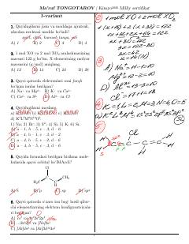

K2Kimyo fanidan milliy sertifikat imtihonlari uchun mo'ljallangan testlar to'plami.
Ushbu qo'llanma kimyo fanidan milliy sertifikat imtihonlariga tayyorgarlik ko'rayotgan abituriyentlar uchun mo'ljallangan. Unda turli xil kimyoviy masalalar, reaksiyalar va nazariy savollarni o'z ichiga olgan 1-variant testlari keltirilgan.